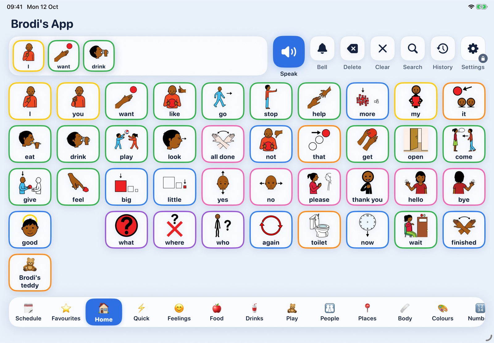
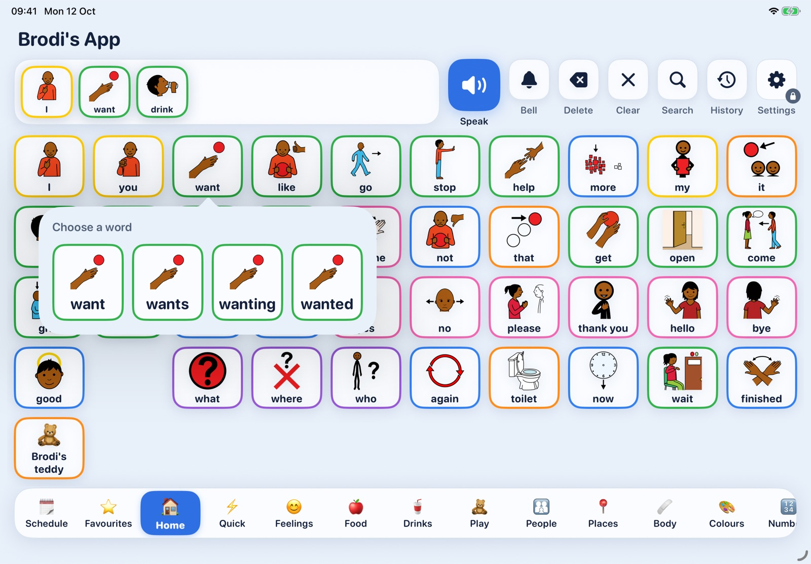
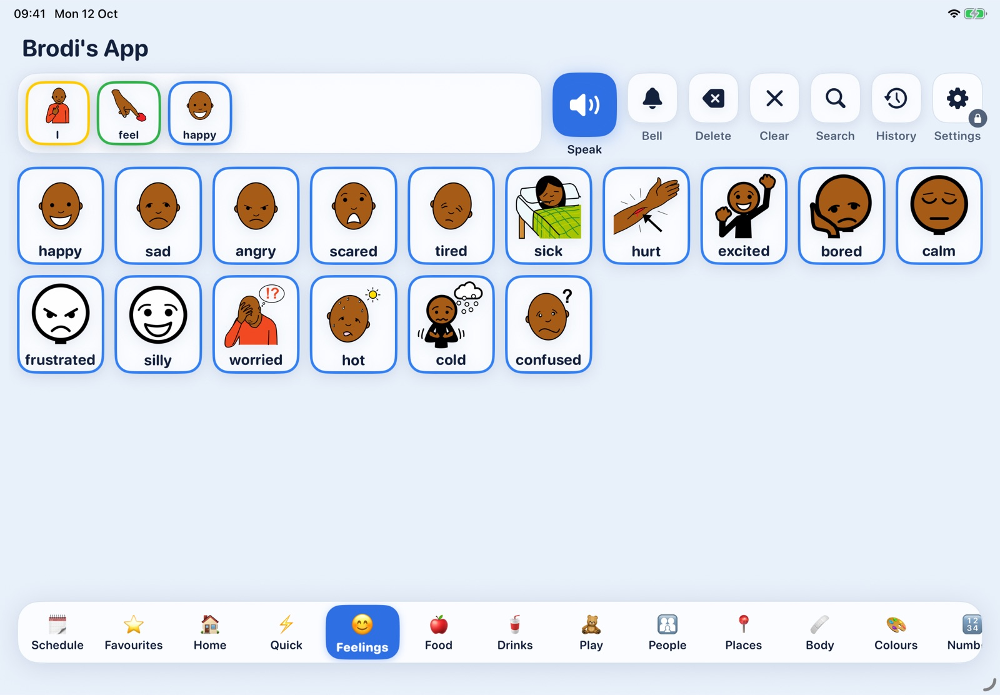
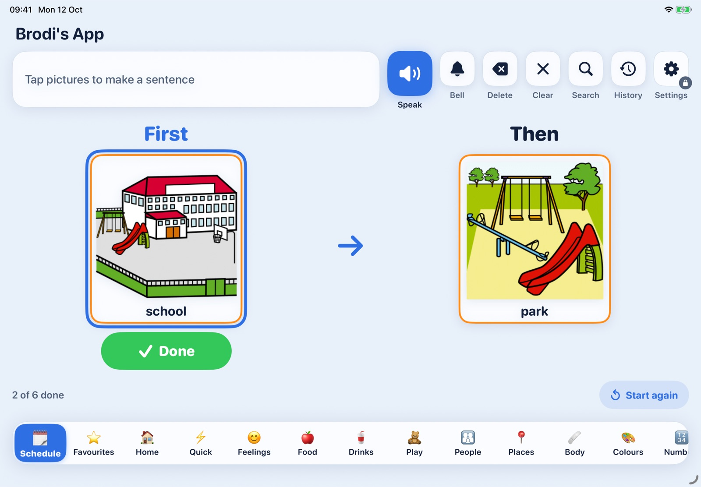
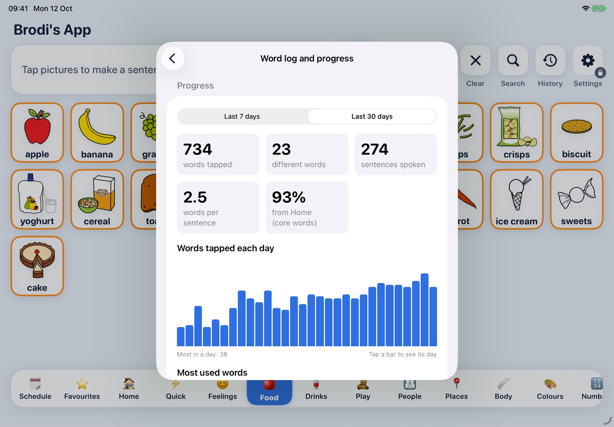

Free, for good
No price, no paywalls and no "pro" version. Every child gets every feature, whatever their family can afford.
AAC4Free is a complete picture-talking app for iPad, made for autistic children and anyone who communicates with pictures. A child taps picture cards to build a sentence, and the iPad speaks it aloud.

The leading AAC apps cost between £150 and £500. For many families, that puts a voice out of reach.
Augmentative and alternative communication (AAC) changes lives. It lets a child ask for a drink, say they're hurting, tell a joke, or simply say "I love you". Yet the apps that do this well are some of the most expensive on the App Store. Families on tight budgets, schools stretching every penny and children waiting for funding are too often left without.
AAC4Free was built to close that gap. It does the job the leading paid apps do, with the features speech and language therapists expect, and it's free, for good. There are no adverts, no subscriptions, no in-app purchases and no accounts. Nothing a child says ever leaves the iPad.
The picture symbols it uses come from ARASAAC under a non-commercial licence, so the app must stay free. That suits us fine: free isn't a trial or a teaser here. It's the point.
Paid app prices are typical UK App Store prices for leading AAC apps.
AAC4Free is designed around what children, families and professionals actually need, not around what can be sold.
No price, no paywalls and no "pro" version. Every child gets every feature, whatever their family can afford.
No accounts, analytics, adverts or tracking. Everything stays on the iPad, and it works fully offline.
Word levels reveal vocabulary in planned stages, and cards never move, so motor plans built today still work tomorrow.
Core vocabulary, Fitzgerald Key colours, word endings and word forms work the way speech and language therapists already teach.
Runs on iPadOS 15 and later, back to the iPad Air 2 and iPad mini 4, so families don't need new hardware.
Boards import and export in Open Board Format, used by CoughDrop, Grid and others, so a child's words are never trapped.
Simple enough for a first communicator, deep enough to grow into full sentences.
Clear ARASAAC symbols, or your own photos, are laid out on calm, colour-coded boards with large touch targets.
Each word drops into the sentence strip and is spoken as it's tapped. Folder cards open topic boards, then return home.
The most natural voice on the iPad says it aloud, even with the silent switch on. Grown-ups can record their own voice too.

The Home board holds the core words children use most, following Project Core's Universal Core vocabulary, with around 480 words across 19 boards in UK English: mum, nan, crisps and all.

Cards are outlined in the colour scheme speech and language therapists use, so children learn the shape of a sentence as well as the words. It can be shown as an outline, an outline with a tint, or turned off.

Everything is designed to reduce surprise. Words stay where they are, the design is calm and uncluttered, and routines can be shown visually.

An optional word log records words and sentences with the date and time, kept only on the iPad. Grown-ups can view progress at a glance or export it for a speech and language therapist.
Chart shown with sample data.
AAC works best when everyone around a child uses it together. AAC4Free gives each of them what they need.
Tap any screen to see it full size.
AAC4Free covers what the leading paid AAC apps do, and adds a few things many of them don't.
| Feature | AAC4Free | Typical paid app |
|---|---|---|
| Price | Free | £150 to £500 |
| Core words and topic boards | ||
| Word levels that never move cards | ||
| Fitzgerald Key colours | ||
| Word forms and word-ending cards | ||
| Built-in switch scanning | ||
| Visual schedules | Some | |
| Visual scene displays | Some | |
| Several children on one iPad | Some | |
| Progress charts and word log export | Some | |
| Print boards | Some | |
| Open Board Format import and export | Few | |
| Works with no account or internet | Varies |
AAC4Free collects no data at all, and its Apple privacy manifest says so.
AAC4Free runs on iPadOS 15 and later, so older and second-hand iPads work too.
Works with VoiceOver, Switch Control and Guided Access, in portrait and landscape.
There's no catch. AAC4Free has no price, no adverts, no subscriptions and no in-app purchases, and every feature is included. The ARASAAC picture symbols it uses are licensed for non-commercial use only, so the app has to stay free.
AAC4Free is currently in pre-release testing. Before release it's being tested with families and speech and language therapists. If you'd like to be told when it's available, or to help test it, please get in touch.
AAC4Free is made for autistic children and anyone who communicates with pictures, including children and adults with apraxia of speech, Down syndrome, cerebral palsy or other conditions that affect speech. It suits early communicators through to children building full sentences.
Yes. AAC4Free imports and exports boards in Open Board Format (.obf and .obz), used by CoughDrop, Grid and other AAC apps. Imported boards keep their pictures, sounds, colours and folder links.
Yes. A grown-up can back up every board, photo and favourite in a single file and restore it on another iPad, for example to share a child's setup between home and school.
No. Speech, symbols and everything else work offline. The only time it goes online is if a grown-up chooses to search the full ARASAAC library of over 13,000 symbols, and chosen symbols are then saved on the iPad.
Yes. AAC4Free has built-in switch scanning, with automatic or step scanning and optional auditory scanning. It works with switch interfaces that connect as Bluetooth keyboards, or the screen itself can act as a switch. It also supports Apple's Switch Control.
We're looking for speech and language therapists, schools and families to try AAC4Free before it launches, and to tell us what would make it better. We'd love to hear from you.